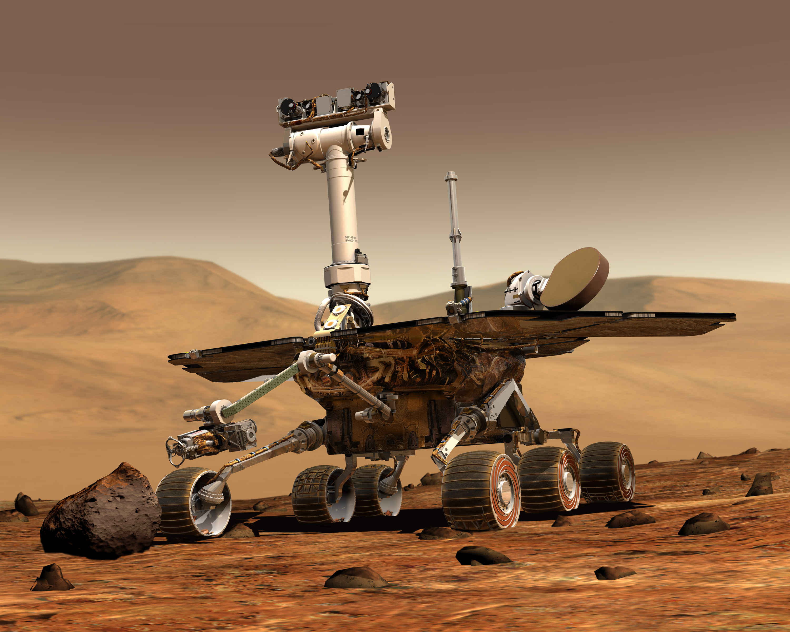

Old Reliable
Gordo was one of the first monkeys to make it into space as part of NASA's space program. Eight monkeys had flown on NASA missions before him, five of whom went by the name of Albert.

The eight monkeys flown before Gordo:
- Albert
- Albert II
- Albert III
- Albert IV
- Albert V
- Yorick, a.k.a. Albert VI
- Patricia and Mike
Gordo's historic flight took place on December 13, 1958 when he took off from Cape Canaveral for a 15 minute flight into space. Even though he was weightless for over 8 minutes the on-board instruments indicated that Gordo enjoyed his journey into space. Scientists monitoring the flight were pleased to note that the only slight side effect Gordo suffered from the entry into space was a modest slowing of his pulse.
The Mission
The rocket carrying Gordo into space would take off from the Atlantic Missile Range at Cape Canaveral, travel further than any monkey had ever travelled before - over 1,500 miles - and reach a height of 310 miles (500 km) before returning to Earth and landing in the South Atlantic, 1,302 nautical miles south of Cape Canaveral.
We all heard the rumors that they want to send a monkey up first. Well, none of us wants to think that they're gonna send a monkey up to do a man's work ... what they're trying to do to us is send a man up to do a monkey's work.
Deke Slayton, Mercury Seven Astronaut
- Nautical mile
- 6080 feet (1.151 statute miles or 1853 metres) and is the unit of length used in sea and air navigation
The Jupiter AM-13
The Jupiter IRBM (Intermediate Range Ballistic Missile) was originally developed by the US Army as a long-range successor to its PGM-11 Redstone missile, but was eventually taken over and deployed by the USAF for political reasons. It was also the only one of the United States' early stategic ballistic missiles with some mobility.
Flight Date: December 13, 1958 Launch Time: 03.53 EST
The Journey
Gordo wore a specially customised space suit custom made for a monkey about one foot tall. The space suit was fitted with instruments, including temperature meters and microphones which recorded his historic suborbital journey, considered one of the outstanding achievements of space research.
References
- Remembering 'Gordo'
- BBC - Monkey Lost After Space Flight
- Gordo and Laika - Space Pioneers
Additional References
The Famous Primates web site is a Web Standardistas production. XHTML + CSS released under a Creative Commons Attribution 3.0 license. Photography Copyright iStockphoto.
| Mission | Personnel | Date | Agency | Objectives | Image |
|---|---|---|---|---|---|
| Apollo 13 | Jim Lovell Jack Swigert Fred Haise | April 11, 1970 | NASA | To reach the moon | |
| Sputnik 1 | Unmanned | October 4, 1957 | Kosmicheskaya Programma SSSR | Launch the first satellite into space |  |
| Apollo 11 | Neil Armstrong Buzz Aldrin Michael Collins | July 20, 1969 | NASA | Land on the moon |  |
| Mars Curiosity Rover | Mars Rover | November 26, 2011 | NASA | Search for evidence of microlife supported on Mars |  |
| Inspiration4 | Jared Isaacman Hayley Arceneaux Chris Sembroski Dr. Sian Proctor | September 15, 2021 | SpaceX | Study the human body in space, raise $200m for St. Jude |